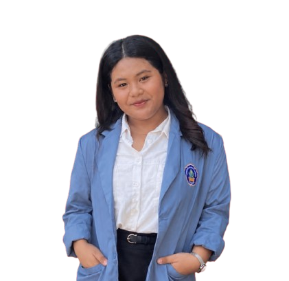

Tentang Saya
Saya Esha Sharlyn Putrinta Br Sembiring, mahasiswa Teknologi Rekayasa Perangkat Lunak (TRPL) yang senang mempelajari bagaimana sebuah ide bisa berubah jadi aplikasi atau website yang benar-benar bisa dipakai orang. Saya suka memperhatikan detail kecil dari kerapian tampilan sampai bagaimana data tersusun rapi di balik layar.
Selain kuliah, saya juga aktif di organisasi kampus dan terus melatih kemampuan pemrograman, web development, serta database lewat proyek-proyek kecil seperti yang ada di halaman ini.
Keahlian
Riwayat Pendidikan
Teknologi Rekayasa Perangkat Lunak (TRPL)
Universitas Pendidikan Ganesha — Semester 3, 2025 – Sekarang
SMA — IPA
SMAN 7 TAMBUN SELATAN — 2025
Perjalanan
-
Semester 3 — Sekarang
Mahasiswa TRPL
Mendalami pemrograman, web development, dan basis data lewat perkuliahan dan proyek mandiri.
-
Sejak Semester 2
Anggota Organisasi Kampus HMJ
Ikut berkontribusi dan belajar kerja sama tim di luar kegiatan akademik.
-
Semester 1
Mulai Belajar Dasar Pemrograman
Mengenal HTML, CSS, dan logika dasar Java serta C++ untuk pertama kali.